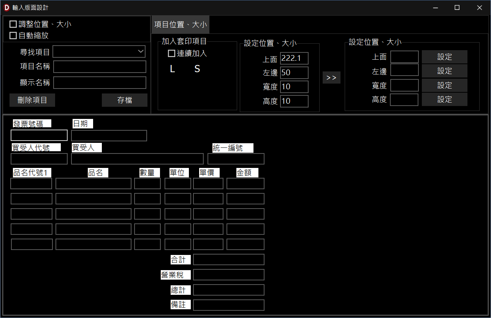

輸入版面設計
本功能提供可視化的設計環境，用於配置 InfoRec 軟體（以下簡稱 InfoRec）的文件輸入版面(自訂模式、文件模式)。您可以自由調整各欄位元件的位置與大小(自訂模式)，或載入文件底圖進行的輸入版面設計。
一、 功能介面概述
-
項目控制與維護（左上區域）：
- 「調整位置、大小」：勾選後可啟用滑鼠拖曳、縮放輸入版面元件。
- 「自動縮放」：勾選後，元件會依據輸入字串的長度自動調整寬高。
- 「尋找項目」：提供下拉式選單，可快速搜尋並定位輸入版面中的特定元件。
- 「項目名稱」與「顯示名稱」：顯示或修改目前選取元件的名稱與標題。
- 「刪除項目」與「存檔」：用於移除選取的元件，或將目前的版面佈局進行儲存。
-
加入套印項目與座標複製（中上區域）：
- 「連續加入」：批次建立元件模式。
- 「L」與「S」按鈕：分別用於在輸入版面上滑鼠點擊處新增靜態文字（Label）與幾何矩形圖形（Shape）。
- 項目位置、大小參數框：即時顯示目前選取元件的上面（Top）、左邊（Left）、寬度（Width）、高度（Height）數值，並可透過
>> 按鈕將數值複製到批次設定框中。
-
批量設定位置、大小（右上區域）：
- 可手動輸入特定的上面、左邊、寬度或高度數值，並點擊對應的「設定」按鈕，將數值批量套用至單一或多選的元件上。
-
輸入版面設計區域（下半區域）：
- 設計文件的輸入標題、輸入元件，如統一發票(發票號碼、日期、買受人、品名、數量、合計、總計等欄位）的排版狀況。
- 文件模式另支援載入背景底圖，提供類紙張書寫的模式。
二、 基本操作步驟
-
編輯現有元件：
- 在輸入版面設計區域，點擊想要修改的元件， 即可改變元件標題、元件尺寸(用滑鼠拖拉或輸入設定)。
- 勾選「調整位置、大小」可以直接用滑鼠拖曳元件位置或拉動邊框改變大小，亦可配合
Ctrl 鍵進行多選批量調整。
-
手動新增元件：
- 點擊「L」（文字）或「S」（圖形）按鈕，接著在下方畫布的目標位置點擊滑鼠左鍵，即可直接建立新元件。
-
精準對齊與批量設定：
- 選取元件後，可點擊
>> 複製座標，並在右側設定欄位內微調數值，再點擊「設定」進行精準對齊。
-
同步與存檔：
- 確認版面元件與欄位皆調整完畢後，點擊「存檔」按鈕，系統將自動把最新的像素座標與標題回寫儲存。

輸入版面設計視窗